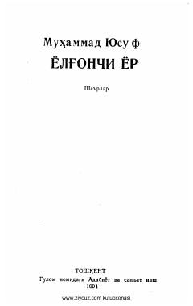

YYTaniqli o'zbek shoiri Muhammad Yusufning lirik she'rlar to'plami.
Ushbu to'plam mashhur o'zbek shoiri Muhammad Yusufning yangi va sara she'rlarini o'z ichiga oladi. Kitobdagi samimiy va ta'sirli satrlar kitobxonga ezgulik, muhabbat hamda hayotiy o'ylar bag'ishlaydi.